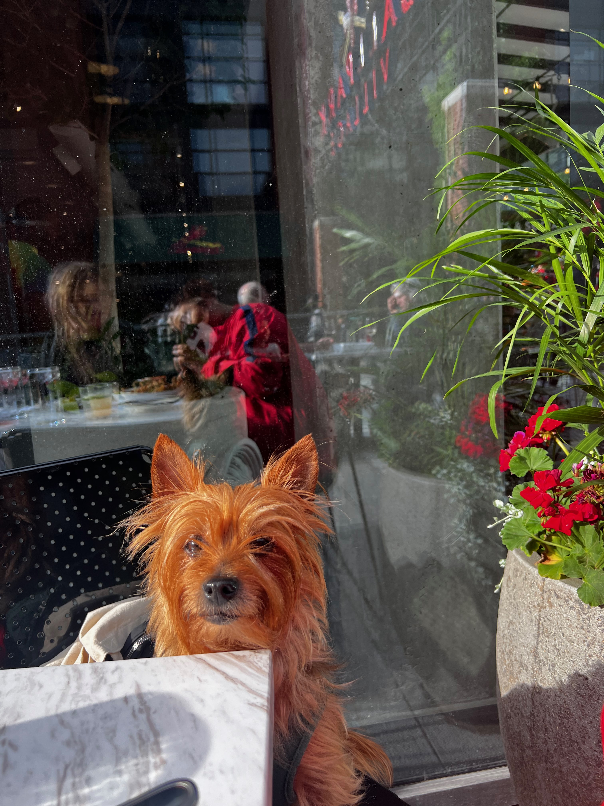
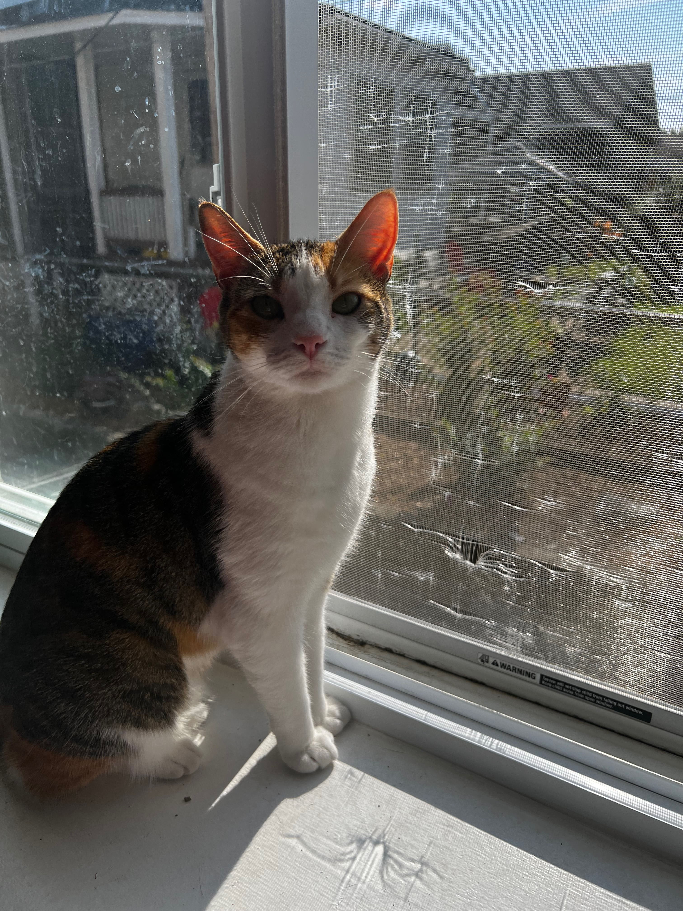
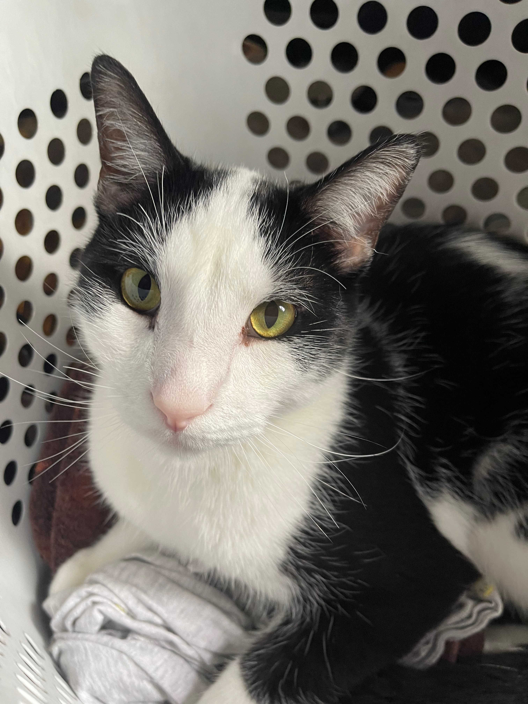

The Oldest, Sophia
Sophia, (most often referred to as Loaf, miss Mo, Momo, muffin) is the most spritely of our group of fur children.
She is the oldest of the bunch and was not super thrilled about welcoming her two siblings into our bunch. Miss Mo is 9 years old this year,
but definitely keeps us on our toes still. She's a very jealous little lady and will ankle bite anyone who tries to mess with her moms. She is the most spoiled
and knows she rules our household.

The Girl (Arya)
Arya, was originally our girl with no name. She and her brother were foster fails, we idn't know what to name her so,
we called her "the girl with no name" until we decided to reference Game of Thrones and started calling her Arya (Ari for short).
Ari does not take shit from anyone. She is not afraid to give someone a big smack if they are messing with her.
She loves food. She acts like we don't feed her (we do.). She is 100% drama.

The Boy (Freddie)
Freddie (aka Sir Fredward) got his name in the most unfortunate way. When we first started fostering him and his sister, Freddie
had gotten into an accident with some other animal. His face had a huge scar across his eye on onto his nose, so he looked very scraggly.
That's when he got the name Freddie, in reference to Freddy Krueger. However it's a running joke that my partner and I say her grew into our
Freddie Prince jr. because he is handsome now! Freddie's favorite past time is to lay on his moms chest and bite at any and all jewelry we wear.
He pretends to not be a lover boy but he truly is.
